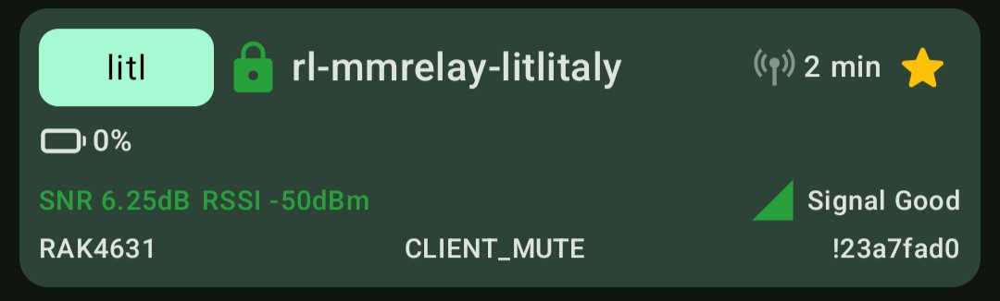

Bots and bridges¶
This page documents various bots and bridges and how to configure them.
We already have lots of new bots. Before setting up a new bot, please:
- consider whether it's really useful: there might already be one bot doing the same thing
- answer only on a specific prefix like
!testinstead oftest, to avoid triggering needlessly - don't answer in a way that might trigger existing bots, to avoid loops
- document your bot here, or at least on some website
- be responsive when people ask about your bot
Known bots¶
In this section, we attempt to document the bots known to operate in the greater Montréal area. Ideally, each bot should have:
- an owner
- a location
- whether it is still operational (and when that was checked)
- a homepage (where, ideally, source code is available)
- an overview of supported commands
EL-Bot¶
- Owner:
EL - Location:
#bots - Status: online (2026-09-19)
-
Commands:
test, responds with for example:ack @[VE2CL-V4] | be1d1c,3a79a0,424242,3c7688,bfbeef (5 hops) | SNR: 10.75 dB | RSSI: -90 dBm | Received at: 21:03:17multitest, responds with e.g.@[T MeshPocket] found 3 unique path(s): e8b3ad ┐ ├ 8e31d2 ├ bf61f2,bfbeef └ c5ba0c,83a50f
YUL-Cartierville-bot¶
- Owner:
Johnputer - Location:
#bots - Status: online (2026-09-19)
- Commands:
test, responds with e.g.@[anarcat-techo] ✅ping, responds with@[anarcat-techo] Pong! 🏓
GrosTonyMoni¶
- Owner:
GrosTonyMobil - Location:
#bots - Status: online (2026-09-19)
- Commands:
test, responds withtest reçue de St-Gabriel de Brandon
T Meshcomod¶
- Owner:
T Meshcomod - Location:
#bots - Status: online (2026-09-19)
- Commands:
test, responds with🤖 Copy, @[Vanfax v4] @ 21:43 Via 4 hops: a319b2→18fe10→bf61f2→e8b3adhelp, responds with(1/3) Say 'help <command>' for details. Commands: advert, announce, aqi (airquality), channels (channel), dice (roll), hamcall, hello(2/3) (hi/hey/+28), help (cmd/commands), joke (jokes/dadjoke/+10), mbx, moon, path (decode/route), ping (test), repeater (rp), schedule,
- Announces new prefix collisions:
Prefix collision: new repeater YOW_Conroy_Repeater shares prefix f0 with Rename_1, YUL-Ste-Julie-Rep2
YUL-Bois-Franc-Bot¶
- Owner: ?
- Location:
#bots - Status: unresponsive (2026-09-19)
- Commands:
test, responds with e.g.🏓 @[VE2FXO-T-Echo]: test! 📡 3 hops (2f52→c5ba→4444→b9bf) 💬 ping • test • metar [iata] • clipboard`
CECREVIER.CA/BOT¶
- Owner: ?
- Location:
#bots - Status: unresponsive (2026-09-19)
- Homepage: https://cecrevier.ca/bot/
- Commands:
test, responds with e.g.Vanfax v4: 2 hops: bf61f2>38f52c | clock offset +3s
YUL-H2E-Ootserver¶
- Owner:
Oots - Location:
#meteo - Status: online (2026-09-19)
- Commands:
!weather LOCATION, responds withMontréal: 12C, Clear sky!forecast LOCATION, responds withPointe-Au-Pere 5d: | Sun 9/8C Broken | Mon 12/7C Light | Tue 12/9C Clear | Wed 12/9C Clear | Thu 13/11C Clear
MG V4-BOT¶
- Owner:
MG V4-mini - Location:
#bots - Status: online (2026-09-19)
- Commands: astronomy commands, see
mg helpfor details, examples:mg sunresponds with:MG SUN (p1/2) Now Az 302.2° Alt -25.6° Nadir @ 00h48 In 3h18 Rise @ 06h39 Az 87.7° In 9h09 MG SUN (p2/2) Max @ 12h47 Alt 45.2° In 15h18 Set @ 18h55 Az 272.0° In 21h26
Bridging Matrix and Meshtastic¶
A Matrix bridge was in operation on the LongFast channel. It has been turned off as of 2026-04-24, but this documentation is kept as future reference if people want to build another one..
Usage¶
Messages sent in the bridged room
(#reseaulibre-meshtastic-bridge:matrix.org)
will be sent to the Meshtastic "LongFast" channel and vice versa. It
is named rl-mmrelay-litlitaly on both sides. On Meshtastic, its
short name is litl.
The bridge also replies to direct messages.
It will show up like this in your device listing in the Android app:

There are plugins that allow for some fancier operations:
-
!ping- send this to the channel from Meshtastic or Matrix to generate a response, useful to test reachability1 -
!health- gives a series of stats about the health of the relay and network (Matrix-only), example:Nodes: 31 Battery: 100.7% / 101.0% (avg / median) Nodes with Low Battery (<= 10): 0 Air Util: 1.28 / 1.03 (avg / median) SNR: 3.93 / 6.00 (avg / median) -
!weather- gives a basic weather report (Meshtastic-only), example:Now: 🌙☁️ Overcast - -2.5°C | Humidity 82% | Wind 15.9km/h 51° | Precip 14%Use
location=to change the location. -
!airUtilTx- shows channel utilization graph for the last 24h (Matrix-only), the!batteryLeveland!voltagegive similar graphs, but currently useless as the device is powered over USB -
!nodes- shows the list of known nodes (Matrix-only) -
!map zoom=12- show a map of the network (Matrix-only), note that the defaultzoom=8is far too large for the current mesh size
Configuration¶
There is now a Matrix bridge setup in the little Italy neighbourhood. I essentially followed this quick start guide and this Docker guide.
Warning
Do not naively follow this guide! If you add another relay that join the same room, you are likely going to create loops and extra traffic to the mesh. Make your own room for your own bot!
I first created a room in the Matrix space, then created a new account and invited it to the room. The room is currently fully open to the public but might be locked down if there's abuse, either by making the room non-writable by Matrix users or invite-only.
Then I setup the container with the following docker-compose.yml
file:
volumes:
mmrelay-data:
mmrelay-cache:
services:
mmrelay:
image: ghcr.io/jeremiah-k/mmrelay:latest
container_name: meshtastic-matrix-relay
restart: unless-stopped
stop_grace_period: 30s
user: "1337:20"
environment:
- MMRELAY_HOME=/data
- MMRELAY_READY_FILE=/tmp/mmrelay-ready
- TZ=UTC # Set timezone (PYTHONUNBUFFERED and MPLCONFIGDIR are set in Dockerfile)
devices:
- /dev/ttyACM0
volumes:
- mmrelay-data:/data
- mmrelay-data:/.cache
Before starting the container, I created a user and group for it:
addgroup --system --gid 1337 mmrelay
adduser --system --uid 1337 --gid 1337 mmrelay
adduser mmrelay dialout
I am not sure if it was necessary, but I also fixed the perms on there:
chown mmrelay:mmrelay /var/lib/docker/volumes/mmrelay_mmrelay-data/_data/
I could have used mmrelay config generate to create a sample configuration
file, but instead I used:
curl -Lo /var/lib/docker/volumes/mmrelay_mmrelay-data/_data/config.yaml https://raw.githubusercontent.com/jeremiah-k/meshtastic-matrix-relay/main/src/mmrelay/tools/sample_config.yaml
Then edited the configuration:
--- sample_config.yaml 2026-03-15 20:01:08.939719431 -0400
+++ /var/lib/docker/volumes/mmrelay_mmrelay-data/_data/confia/config.yaml 2026-03-15 21:40:59.802696541 -0400
@@ -44,27 +44,25 @@
# 4. For interactive setup, use: mmrelay auth login
#
e2ee:
- enabled: true
+ enabled: false
# Message prefix customization (Meshtastic → Matrix direction)
#prefix_enabled: true # Enable prefixes on messages from mesh (e.g., "[Alice/MyMesh]: message")
#prefix_format: "[{long}/{mesh}]: " # Default format. Variables: {long1-20}, {long}, {short}, {mesh1-20}, {mesh}
matrix_rooms: # Needs at least 1 room & channel, but supports all Meshtastic channels
- - id: "#someroomalias:example.matrix.org" # Matrix room aliases & IDs supported
+ - id: "#reseaulibre-meshtastic-bridge:matrix.org" # TODO: invite the bot here and then make room public
meshtastic_channel: 0
- - id: "!someroomid:example.matrix.org"
- meshtastic_channel: 2
meshtastic:
- connection_type: tcp # Choose either "tcp", "serial", or "ble"
- host: meshtastic.local # Only used when connection is "tcp"
- serial_port: /dev/ttyUSB0 # Only used when connection is "serial"
- ble_address: AA:BB:CC:DD:EE:FF # Only used when connection is "ble" - Uses either an address or name from a `meshtastic --ble-scan`
- meshnet_name: Your Meshnet Name # This is displayed in full on Matrix, but is truncated when sent to a Meshnet
+ connection_type: serial # Choose either "tcp", "serial", or "ble"
+ #host: meshtastic.local # Only used when connection is "tcp"
+ serial_port: /dev/ttyACM0 # Only used when connection is "serial"
+ #ble_address: AA:BB:CC:DD:EE:FF # Only used when connection is "ble" - Uses either an address or name from a `meshtastic --ble-scan`
+ meshnet_name: RL # This is displayed in full on Matrix, but is truncated when sent to a Meshnet
message_interactions: # Configure reactions and replies (both require message storage in database)
- reactions: false # Enable reaction relaying between platforms
- replies: false # Enable reply relaying between platforms
+ reactions: true # Enable reaction relaying between platforms
+ replies: true # Enable reply relaying between platforms
# Connection health monitoring configuration
#health_check:
@@ -116,7 +114,7 @@
# These are core Plugins - Note: Some plugins are experimental and some need maintenance.
plugins:
# Global setting for all plugins: require bot mentions for commands
- #require_bot_mention: true # Set to false to disable mention requirements for all plugins
+ require_bot_mention: false # Set to false to disable mention requirements for all plugins
ping:
active: true
@@ -125,13 +123,21 @@
weather:
active: true
#require_bot_mention: true # Override global setting for this plugin only
- units: imperial # Options: metric, imperial - Default is metric
+ units: metric # Options: metric, imperial - Default is metric
#channels: [] # Empty list, will only respond to DMs
nodes:
active: true
#require_bot_mention: true # Override global setting for this plugin only
# Does not need to specify channels, as it's a Matrix-only plugin
+ health:
+ active: true
+ telemetry:
+ active: true
+ map:
+ active: true
+
+
#community-plugins:
# sample_plugin:
# active: true
Warning
Again, at this stage, do not use the above room configuration. Pick your own room!
At this point, the container should be able to start:
docker-compose up
... and mmrelay commands can be ran with:
docker-compose exec mmrelay mmrelay
The mmrelay auth login created the matrix/credentials.json file
with an access token the the home server configuration.
A RAK4631 development kit is hooked up to the server over USB, hanging off the side in a janky setup in my basement. The board itself is configured as normal except:
- hops: 7 (the node is in my basement and will necessarily go through at least one hop, and is designed to try to relay things)
- device role:
CLIENT_MUTE, to avoid re-broadcasting, as we're an endpoint
The node itself has limited view of the network and relies on a second, better positioned, relay to transmit its traffic.2
Note that in the above patch, there are some plugins enabled as well, see below on how to use those.
-
The bot is currently in Little Italy, with a poor antenna, so don't be surprised if you don't hear it. It will be improved this summer. ↩
-
This is not ideal: ideally, we'd connect directly to the better positioned router, but that router is not actually setup correctly yet either, so we'll wait. Ultimately, I want to have a relay on the roof and connect to it with a relay like this over Bluetooth, and I'd probably install (and upgrade) the bot with
pipthen, on a single-board computer like a Beagle Board or Raspberry Pi. ↩